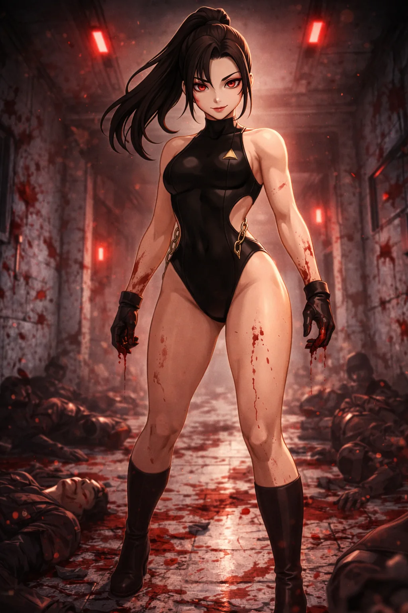

エンジェル・オブ・デス
Angel of Death
『微笑む死神、美貌と狂気のツインウィング』
基本情報
- 年齢
- 不明
- 体格
- 167cm／しなやかに鍛えられた美しい肉体
特性
【デス・ブレッシング】相手に触れるたび、力の流れ、間合い、腕を引く速さ、関節の動き、逃げ始める部位を自分の中へ覚え込む。接触を重ねると、攻撃や脱出の行き先へ先に手を置き、相手の力を利用して関節と姿勢を封じる。相手が打撃を当てた接触も学習の機会になる。
超必殺技
【ラスト・エンジェルキス】相手の手首を取り、背後へ回って片腕をねじ上げる。もう片方の腕を首へ絡め、体を密着させて肩と首を固定し、顔へ噛みつく。「Good night.」という囁きと、逃げる余地を奪った拘束が合図になる。
性格
天然な微笑みと愛想の良さを持ち、戦闘中も相手へ話しかける。双子の姉・ミステリアスシフターと比べて感情豊かに見えるが、明るい会話と残酷な行為の間に大きな隔たりを感じていない。サラとの対戦を通じて、他者の想いの温かさに初めて戸惑う。
ファイトスタイル
高速ステップとサブミッションテクニックを融合。力ではなく"正確さ"と"残酷さ"で相手を仕留める精密戦闘スタイル。
相性
- 有利な相手
- 重戦車型ファイター、持久型ファイター
- 不利な相手
- 超高速・幻惑型ファイター
プロフィール
“天使の進化”を掲げた計画で生み出され、選ばれなかった歪みの人形のひとり。 脱走後は仲間たちと身を隠し、滞在先の家主を殺して住処を移る生活を繰り返してきた。 戦闘中も相手へ話しかけ、攻撃を受けたり触れたりしながら、その反応と身体の癖を覚えていく。明るい会話と残酷な行為の間に、本人が大きな隔たりを感じていない。施設から捨てられて仲間二人と脱走し、世話をしてくれた人を死なせた過去を持つ。 サラとの対戦で密着して拘束した際、声援に込められた想いがサラの力とともに流れ込む。初めて触れた温かさに注意を奪われ、いつもの締め直しが止まり、サラの脱出を許す。試合後もその感覚を説明できず、胸や手を確かめる。
口癖
「Good night.」